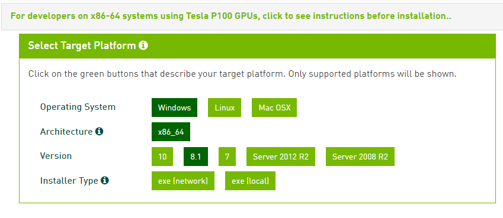
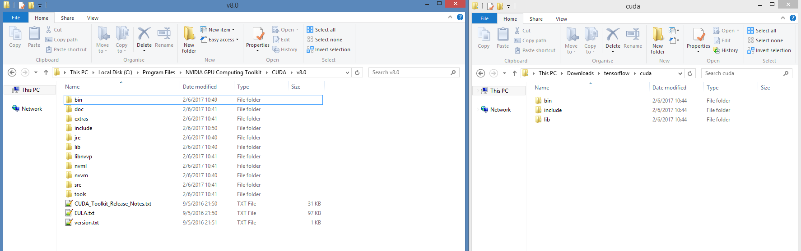

Getting Started
To start with deep learning, you can choose either tensorflow, theano
Tensorflow
Install in Windows
In this section, I will introduce how to setup your tensorflow library working with GPU in Windows.
My environment is:
- Windows 8.1 Pro 64-bit
- Graphic Card: NVIDIA GeForce GTX 980
What are missing?
- Anaconda
- CUDA Toolkit 8.0 (cuda_8.0.44_windows.exe)
- CUDNN - CUDA for Deep Neural Networks (cudnn-8.0-windows7-x64-v5.1.zip)
- tensorflow package
Anaconda
Anaconda is the leading open data science platform powered by Python. The open source version of Anaconda is a high performance distribution of Python and R and includes over 100 of the most popular Python, R and Scala packages for data science.
Step 1: Download the Anaconda installer
Step 2: Double click the Anaconda installer and follow the prompts to install to the default location.
After a successful installation you will see output like this:

CUDA Toolkit 8.0
The NVIDIA CUDA Toolkit provides a comprehensive development environment for C and C++ developers building GPU-accelerated applications. The CUDA Toolkit includes a compiler for NVIDIA GPUs, math libraries, and tools for debugging and optimizing the performance of your applications. You’ll also find programming guides, user manuals, API reference, and other documentation to help you get started quickly accelerating your application with GPUs.
Step 1: Verify the system has a CUDA-capable GPU.
Step 2: Download the NVIDIA CUDA Toolkit.
Step 3: Install the NVIDIA CUDA Toolkit.
Step 4: Test that the installed software runs correctly and communicates with the hardware.

cuDNN
The NVIDIA CUDA Deep Neural Network library (cuDNN) is a GPU-accelerated library of primitives for deep neural networks. cuDNN provides highly tuned implementations for standard routines such as forward and backward convolution, pooling, normalization, and activation layers. cuDNN is part of the NVIDIA Deep Learning SDK.
Step 1: Register an NVIDIA developer account
Step 2: Download cuDNN v5.1, you will get file like that cudnn-8.0-windows7-x64-v5.1.zip

Step 3: Copy CUDNN files to CUDA install
Extract your cudnn-8.0-windows7-x64-v5.1.zip file, and copy files to corresponding CUDA folder
In my environment, CUDA installed in C:\Program Files\NVIDIA GPU Computing Toolkit\CUDA\v8.0, you must copy append three folders bin, include, lib

Install Tensorflow Package
CPU TensorFlow environment
conda create --name tensorflow python=3.5
activate tensorflow
conda install -y jupyter scipy
pip install tensorflow
GPU TensorFlow environment
conda create --name tensorflow-gpu python=3.5
activate tensorflow-gpu
conda install -y jupyter scipy
pip install tensorflow-gpu
References
- Using TensorFlow in Windows with a GPU, http://www.heatonresearch.com/2017/01/01/tensorflow-windows-gpu.html
- sentdex, Installing CPU and GPU TensorFlow on Windows, https://www.youtube.com/watch?v=r7-WPbx8VuY
word2vec Example
Step 1: Download word2vec example from github
$ dir
02/06/2017 11:45 <DIR> .
02/06/2017 11:45 <DIR> ..
02/06/2017 10:12 9,144 word2vec_basic.py
Step 2: Run word2vec_basic example
$ activate tensorflow-gpu
$ python word2vec_basic.py
Found and verified text8.zip
Data size 17005207
Most common words (+UNK) [['UNK', 418391], ('the', 1061396), ('of', 593677), ('and', 416629), ('one', 411764)]
Sample data [5241, 3082, 12, 6, 195, 2, 3136, 46, 59, 156] ['anarchism', 'originated', 'as', 'a', 'term', 'of', 'abuse', 'first', 'used', 'against']
3082 originated -> 5241 anarchism
3082 originated -> 12 as
12 as -> 6 a
12 as -> 3082 originated
6 a -> 195 term
6 a -> 12 as
195 term -> 2 of
195 term -> 6 a
Initialized
Average loss at step 0 : 288.173675537
Nearest to its: nasl, tinkering, derivational, yachts, emigrated, fatalism, kingston, kochi,
Nearest to into: streetcars, neglecting, deutschlands, lecture, realignment, bligh, donau, medalists,
Nearest to state: canterbury, exceptions, disaffection, crete, westernmost, earthly, organize, richland,
...